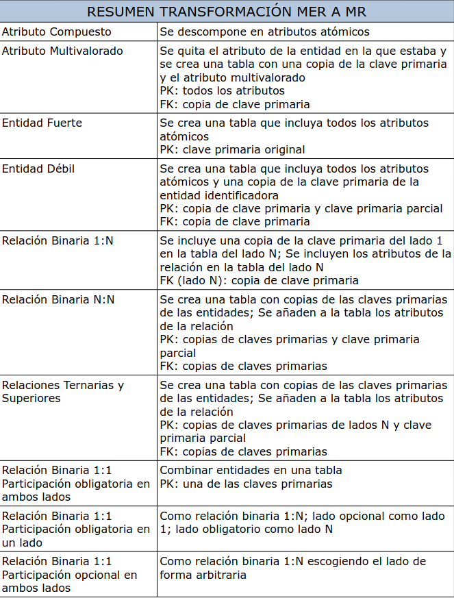
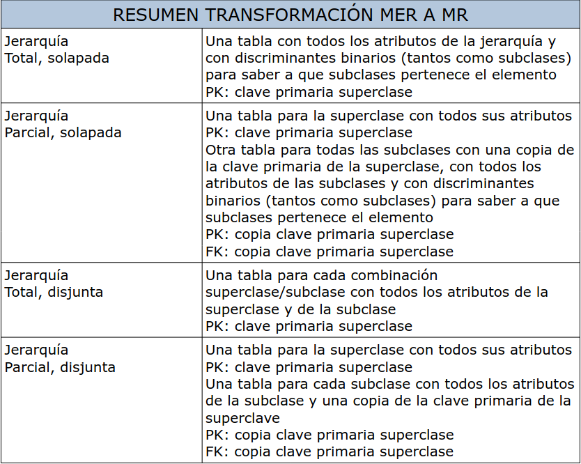
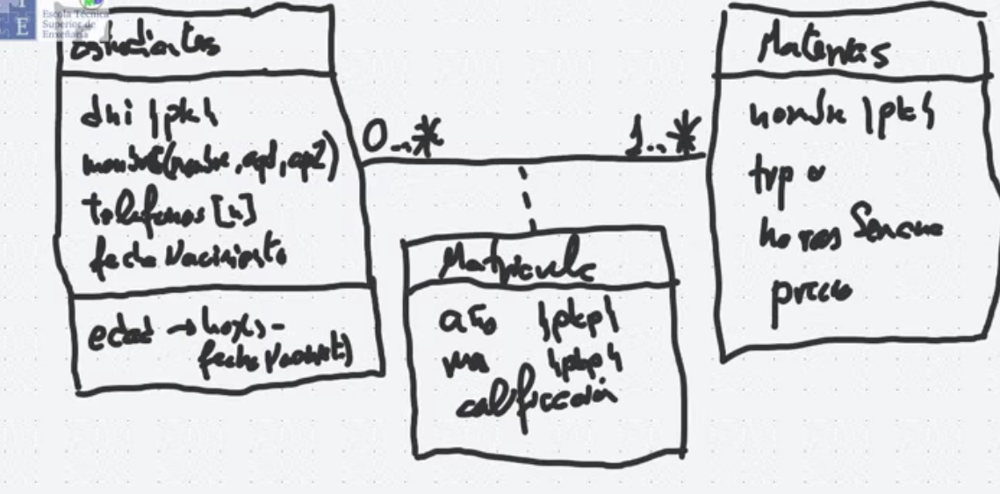
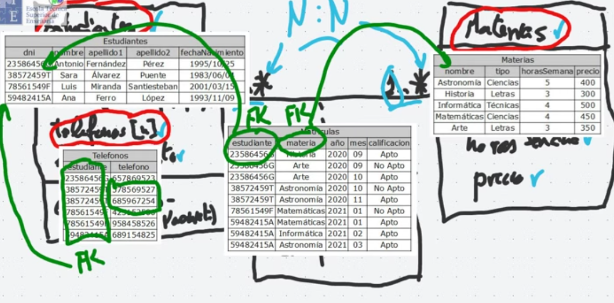

BASES DE DATOS · curso 2
3. Transformación de MER a MR · BASES DE DATOS
Escrito por Adrián Quiroga Linares.

TIP
Solapada -> incluir discriminadores binarios Parcial-> incluir una tabla para la superclase a mayores de las subclases Total-> no hay tabla para la superclase Disjunta->no hay discriminadores binarios

Ejemplo

